文化遗产
姑太们渐离人世以后，政府和地方社区通过博物馆、展览厅的形式，用照片、器物来继续延续历史记忆，这也是地方社区对于社区独特历史的存续和建构。如哈布瓦赫所强调的那样，集体记忆在本质上是立足现在而对过去的一种重构。和文臻
家居
姑婆屋
建筑概况
姑婆屋，建于清代，黄埔村自梳女聚居之所，俗称姑婆屋。三间两层一院，头门博古脊，花岗石门夹，杉木大门，13横趟栊，房门门头上方雕有精美的花卉图案。屋内分隔为各自独立的单间，具有晚清时期建筑特色。
广东的姑婆屋留剩至今，大概存在三种不同的形态：
- 第一，废旧的、无人居住的遗址，大量见于浦潇月[1]的调研中，如肇庆观音堂、永远堂、西樵益善堂等；
- 第二，纪念性、展览性的景观建筑，由政府对无人居住的姑婆屋进行产权回收和文化改造，主要来自姑婆屋的所有者和居住者主动的奉献和分享，最典型的是均安冰玉堂；
- 第三，仍有极少自梳女居住的姑婆屋，大多被附加了其它建筑功能，或完全隐蔽于民间，失去了持续聚集、庇护自梳女的意义。
均安：沙头村
冰玉堂
冰玉堂坐落在顺德均安镇沙头管理区的鹤岭山麓（故又称鹤岭静安舍），是新加坡顺德均安沙头同乡会筹建的华侨姐妹安老院。均安镇隶属于广东省佛山市顺德区，位于顺德区西南部，与中山、江门两市接壤。辖区总面积79.45平方千米。截至2019年末，均安镇户籍人口有97370人。沙头社区是均安镇辖区内中心地带，位于均安镇府南2公里，距区政府所在地大良18公里，东连仓门，北接三华，西毗矶头，南邻新会荷塘，面积有3.89平方公里。
沙头属于典型的同姓宗族聚居村，全村原住父系姓氏皆姓黄，村头和村尾各有一个黄氏大宗祠。清末民初时，沙头是顺德地区下南洋打工潮的重镇之一，出现一户几代人前赴后继前往新加坡等地务工的现象，"妈姐"身份的自梳女则得益于此大量出现。
20世纪40年代，均安沙头在南洋谋生的自梳女成立了同乡会。她们大都怀念故乡，希望能叶落归根，与亲人同住。看到一些前辈，有的无力回乡，有的略有积蓄，回乡又不能与家人同住（当时的风俗自梳女不得在家居住和辞世）。她们便倡议在家乡建一间自梳女的安老院。这一倡议立即得到了众姐妹的热烈响应，共筹得港币8万元，适逢祖国解放，党号召各界大力"支前"，自梳女们响应号召，将款项借给了政府。翌年，政府归还款项，划出土地，协助建设安老院，于1951年落成，取名"冰玉堂"，冰清玉洁之意。该堂建成以后，凡本乡旅外姐妹，回到家乡、没有依托，均可入住，不收住宿费。入住的最高峰是1978年，有三十多人同食同住，盛及一时。1991年，冰玉堂重修，由当时健在的自梳女60余人和有关部门共同捐资。2012年12月25日，顺德均安冰玉堂"自梳女"博物馆挂牌成立，并作为省级文物保护单位对外免费开放。
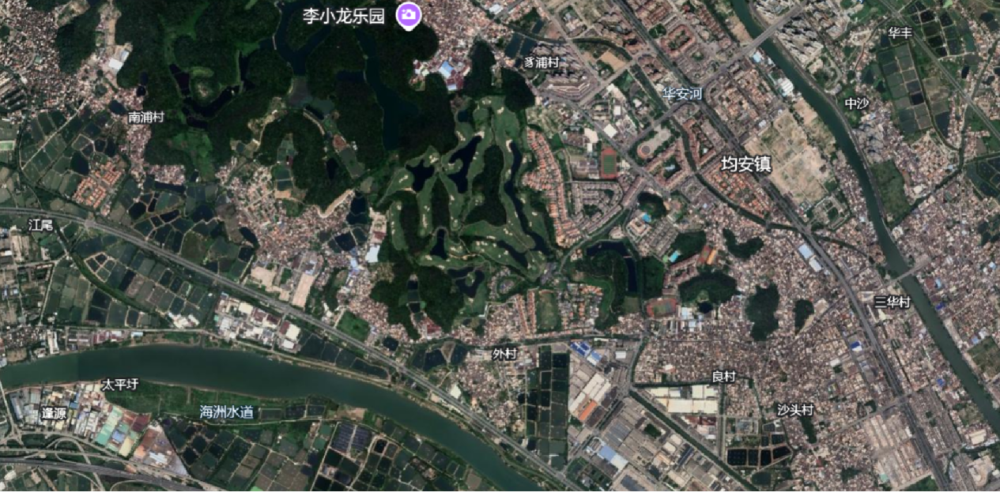 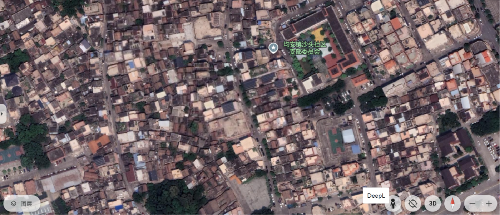有关均安沙头的田野主要依赖冰玉堂管理阿姨引路，由于冰玉堂主要的住客现今多已离世，在世的自梳女居住也较为分散，没有什么人际联系。
西山：西樵山
西樵山下的田野，要远比均安冰玉堂更为复杂。我们此行已知的地点信息屈指可数，曾经深入这片田野点的学者有很多，但都没有留下具体的街道、门牌号资料。放眼望去，西樵山的官山圩，层层叠叠、密密麻麻的岭南风格独栋家宅紧凑地排出"井"字形街区，它们纵横交错，街坊对门间距最窄处大约不超过2米，而且沿着山势一路斜坡向上蔓延，一眼望不到头。
……此外，在同样是自梳女盛行的南海西樵关山圩，一个名为"高街"的街巷，在不到一百米的范围内，就有三个斋堂：益善堂、福庆庵、祥庆庵，其中都供奉着姑婆的神祗，它们同样和其它神灵同席，受到村民的祭拜。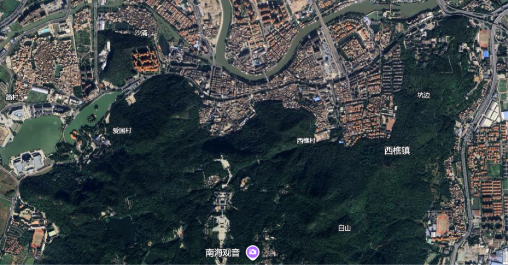 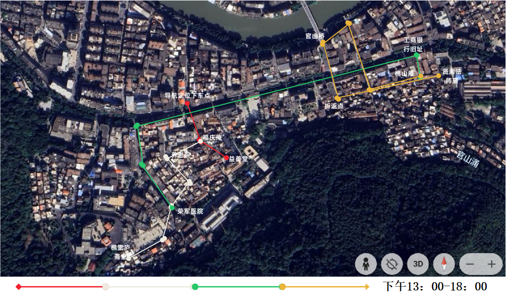 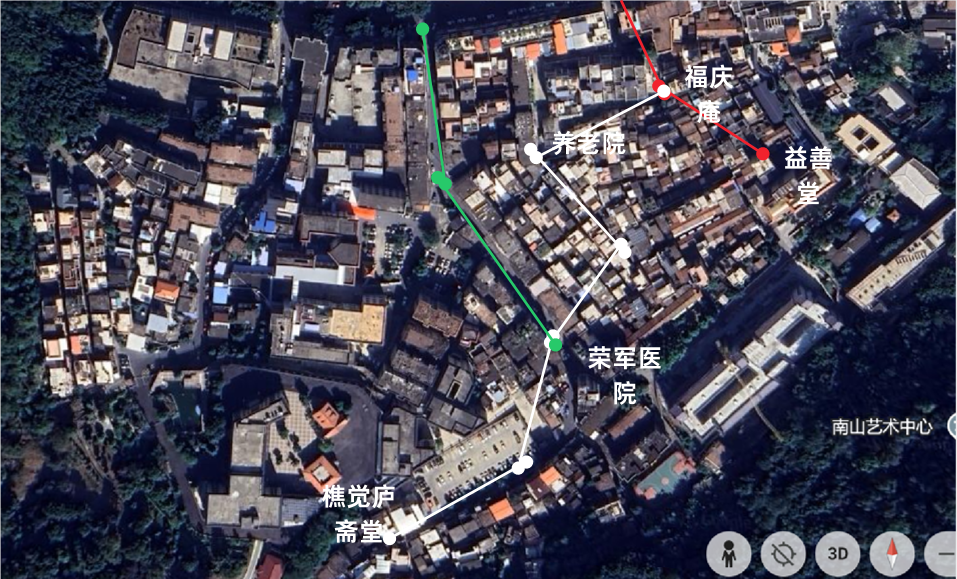 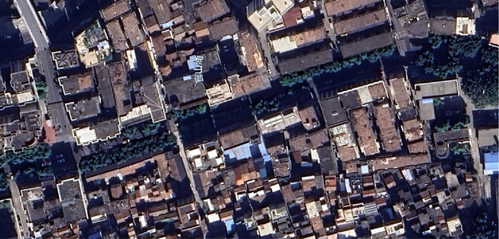
1） 益善堂
姑婆屋在西樵镇集中出现，益善堂就是其中的代表。它有100多年的历史。自斋堂成立以来，共有300多名来自各地的自梳女在这里买位"升仙"。益善堂最初由西樵山脚下杏头村的4位自梳女集资筹建，占地300平米有余，分为南北两个部分。每个自梳女都有自己独立的房间和厨房。这里最热闹的时候住过40多位自梳女。斋堂都是年轻的自梳女照顾年老的自梳女，活着的自梳女帮手料理过世自梳女的后事，这是斋堂传下来的规矩。
益善堂遗址共两层，以佛堂（斋堂）为中心，向左右上三方延伸出卧室、客厅、厨房等，呈现出类同的建筑特征。相关文献提到："益善堂与龙华洞相似，兼具姑婆屋和斋堂性质，同样有人前来参神问卜，大概建于清末民初。较早介绍益善堂的文献是1985年的一篇琐记，称里面住着几位年老的自梳女。2006年记者采访时，堂内仍住有4位姑婆(年纪最大者为堂主潘珠四，时年100岁) 和1位自愿入住的41岁独身妇女；报道称她们均十分信佛，每天早晚上香礼佛，过着青灯常伴的生活。至2011年，该堂已无人居住。"
益善堂古远而沧桑，房子的一些砖石长满青苔，窗户的玻璃也残缺不全。房子虽然满脸沧桑，但在青砖古瓦、雕梁画栋中仍可以看到当年的气派和豪华，每扇门、每个窗户上面都有雕刻精美的壁画。但现在壁画大多损毁。浦潇月团队曾前往益善堂进行实地调研，当时益善堂的大门没有上锁，他们采集到了益善堂的秃瓢资料并和义务打理益善堂的芬姐进行了交流。但今年我们到达益善堂时，大门早已上锁，透过窗看屋内漆黑一片，只剩下2024年新贴的对联。
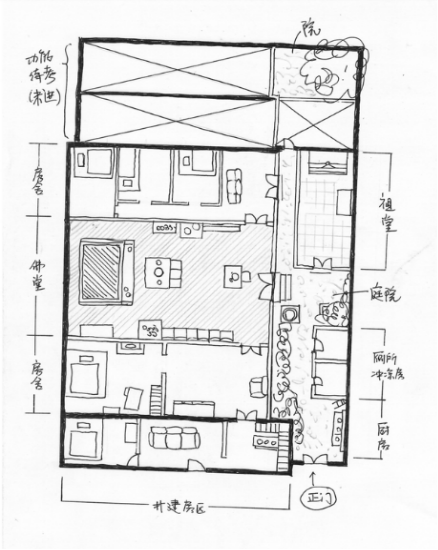2）樵觉庐斋堂
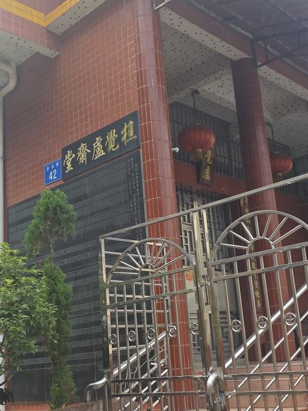据文献记载，该斋堂由珍姑婆(已故)以易地重建原西樵山蟠龙洞万佛堂(西樵早期的佛教女众修道场)的名义发起修建，由于捐资修建和居住的人们大多是自梳女，所以更名为"樵觉庐斋堂"，它的早期性质偏向于姑婆屋，主要用于自梳女和孀居者居住、养老、临终和安置牌位。2006年，应信众要求，斋堂再次扩建，这个时候珍姑婆年已老迈，身体欠佳，遂将斋堂托付给年轻有为的莲姨管理 。
樵觉庐斋堂是一处独栋房屋，现代化的红色墙砖上挂有两块黑砖，小型的刻着斋堂的名称——"樵覺盧齋堂"，而大型的镌刻着数位捐赠者的姓名。由于无法联系到斋堂的管理人员，我们未能进入斋堂内部。根据当地人提供的信息，樵觉庐斋堂内部仅有一位管理人居住，应当是为文献所记载的"莲姨"，里面供奉着许多"姑婆"的牌位。
3）樵山庵
樵山庵整体呈典型的姑婆屋形制，两层楼高，正门进去穿过门廊，就是一个略显昏暗的佛堂，全室内几乎没有电灯，只依靠自然光和佛龛上的电烛火照明。佛堂尽头的佛像和香炉规模不小，虽然是在居民楼中，规格和齐全度却可以与一个小型寺庙相媲美。据姑婆采访中说，供奉的是三宝佛。三宝佛就是大乘佛教的主要崇敬对象三世佛的俗称，又分为以空间计算的"横三世佛"与以时间计算的"纵三世佛"。横三世佛指中央释迦牟尼佛，东方药师佛（另一说是东方阿閦佛，又称"不动佛"），西方阿弥陀佛；纵三世佛指过去佛燃灯佛，现在佛释迦牟尼佛，未来佛弥勒佛。此处供奉的推测为横三世佛。佛堂左右两侧都是居室，后方则是院落。
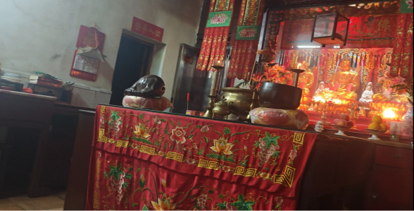祖堂内所有人的名字，都用毛笔写在一张纸上，是为芳名簿。在世的姑婆，名字上都贴着一张红纸，等她们逝世之后就将红纸撕下。不同于一般的族谱，这些名字之间本没有血缘，因此也不存在长幼尊卑，只是平等地排列在一起。
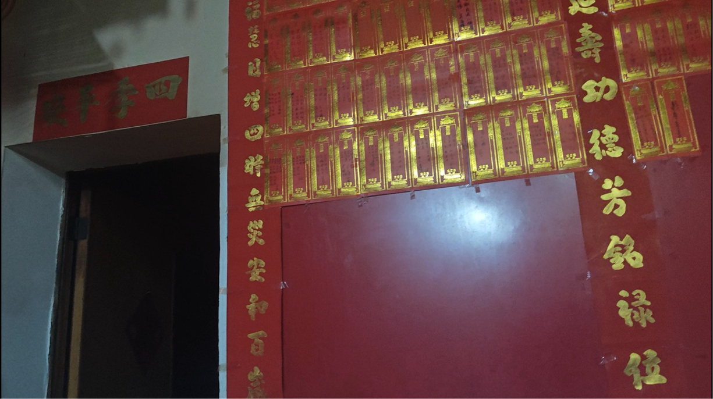广州：海珠区
黄埔姑婆屋
清末至民国时期，黄埔村因港口贸易繁荣，自梳女群体在此聚集，形成了以姑婆屋为核心的生活共同体。姑婆屋为三间两层的合院式建筑，总面阔17.07米，进深12.7米，占地面积220平方米，坐西南朝东北。
黄埔姑婆屋采用青砖石脚墙体与硬山镬耳屋顶，适应岭南湿热气候，兼具防火与通风效能。其装饰朴素实用，门楣刻有"冰清玉洁""贞静自守"等题字，反映自梳女崇尚独立与纯洁的价值观；房门上方雕有花卉图案，细节精致却无传统宗祠的繁复雕饰。建筑材料以青砖、杉木为主，花岗岩门框与石阶凸显坚固性，阳台部分采用近代钢筋混凝土结构，体现中西技术融合。
屋内功能分区明确，一层设集体宿舍（通铺）、厨房及工坊，二层为私密居所，中庭天井用于晾晒蚕丝，体现了"生活-生产-信仰"一体化设计。此外，它的公共空间占比大，如祭祀厅供奉观音与自梳女先辈牌位，而且门廊设趟栊门（13横木栅），兼具防盗与通风功能。
由于姑婆屋为女性专属空间，禁止男性进入，突破传统建筑的性别秩序。至今，建筑内保留自梳女生活器物，如纺车、刺绣工具及书信，部分房间陈列"梳起"仪式相关文物，展现其独特的文化符号体系。
2002年，黄埔姑婆屋被列为广州市文物保护单位，部分建筑经修复后作为文化展馆开放，如黄埔古村"姑婆屋遗址"，陈列自梳女生平影像、手工艺品及口述史资料。作为"海上丝绸之路"文化的重要组成部分，姑婆屋与黄埔古港、日本楼等遗迹共同构成广州对外交流与本土文化融合的鲜活样本。
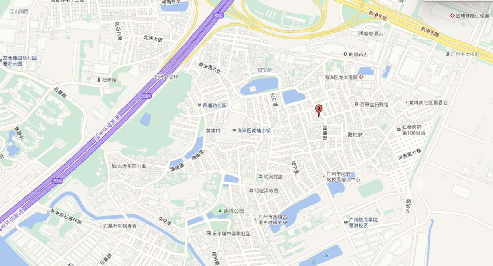肇庆
2016年的一篇报道[1]提到肇庆观音堂"保留了清代农家小院的布局，是珠三角典型的四合院，由正房（斋堂）、东西厢房和南房四面围合而成，卧室则在南房，位于院落的最南端。整个小院被围墙围合起来，以保证院落的安全和私密性。入口位于小院的东南角，进去可以看到自梳女日常活动的地方。院子里种了很多花草树木。"这个格局在形形色色的姑婆屋中保持着惊人的一致。
在肇庆和西樵的田野中，姑婆屋呈现出以下特点：
1.分布呈现大集中，小分散。大集中，指的是在一个居民集中居住的大片区内可能同时分布着多个姑婆屋，例如西樵官山圩以高街西街为中心的居民区；小分散，是这些姑婆屋之间、姑婆屋成员与附近其他普通居民间往往没有太强的人际联系，各自相对独立，无法形成一个整体性的社区，住在巷头的居民甚至可能不清楚就在同一巷尾的某一间姑婆屋的存在。不过，也不排除是由于年代久远，附近住客更新换代，但从田野实况来看，自梳女的生活低调、深居简出，姑婆屋存在较为隐蔽。
2.附近往往伴随有宗教建筑，或建筑本身有一定的宗教功能。某种意义上，宗教是吸引群众力量维持姑婆屋存续的重要动力源泉。
口述史与妇女史
人物志
中国古代封建礼法严苛，不少女性不甘受虐待，矢志不嫁，或与女伴相互扶持以终老，这就是自梳女的雏形。明代中后期由于蚕丝业的兴起为女性提供了独立谋生的机会，自梳的习俗在封建礼法的压迫下，得以相沿300余年，在晚清至民国前期达到高潮，直至20世纪30年代以后，随着女性社会地位提高和战乱的影响而渐趋消歇。
如今，冰玉堂健在的16个最后一批自梳女中，最年长的已经102岁，其余的也都已八九十岁以上。每逢七月初七等传统节日，一些自梳女甚至从新加坡、马来西亚赶回来相聚。
记者看到，在冰玉堂侧房的神龛上，已亡人的灵牌密密麻麻，越来越多。长生牌上盖着红纸的寥寥无几。细数了一下，只剩16个长生牌用红纸盖着。一旦谁故去了，谁牌上的红纸就会被撕掉，成为黑色的灵牌，供后人祭奠。
据悉，在广东肇庆、东莞和佛山西樵山下的古建筑里，也有着为数不多的最后一代自梳女守着沉默的往事，伴着青灯、檀香、佛经在安度余生。
(均安)
欧阳焕燕[2][3]
在广东省佛山市顺德县的一个村子里，94岁的欧阳焕燕躺在一张木椅上看着肥皂剧，她看上去似乎不会与新加坡总理李显龙和前总理李光耀有任何关系。
欧阳焕燕在李家做了40多年的保姆，做保洁、照顾孩子，目睹了李显龙从出生到长大后去国外留学。在此之前，她在陈嘉庚（1874-1961）家做了9年的保姆，陈嘉庚是著名的商人、海外华人先驱及慈善家。欧阳焕燕18岁就开始在新加坡从事保姆工作，是从广东省到东南亚国家创业的妇女之一。
第一位"自梳女"出现在晚清（1644-1911）的广东珠三角一带。在顺德，由于桑蚕养殖业的蓬勃发展，许多女工的经济越来越独立，赞成享受封建婚姻束缚之外的自由。据现有资料显示，在1886年至1934年间赴新加坡的自梳女，仅顺德均安欧阳焕燕老家的隔壁村庄沙头村就有500多人。
自1911年辛亥革命爆发后，自梳这种时尚式微，1949年中华人民共和国成立后，这种时尚消失了。欧阳焕燕是如今为数不多仍健在的"自梳女"之一。
欧阳焕燕1934年离开均安镇西溪村，跟随姑姑和姐妹们去了新加坡。当时她的大姐已经在陈嘉庚家里做工，因为手脚麻利，她也进入了陈家。她说，"我家很穷"，随着父亲的过世，她的母亲要抚养三个儿子和三个女儿。她回忆说，"当我们的船抵达新加坡时，我感到陌生。码头很破旧，和我所想的不一样。"
从古老的乡村来到繁华的都市，欧阳焕燕只知道自己埋头干活，并不晓得和善的主人就是大名鼎鼎的华侨领袖，更不晓得抗日战争爆发时，她的主人在新加坡召开侨民大会，筹款支援祖国。欧阳焕燕说，当时日本的战火很快就烧到了新加坡，陈嘉庚一家准备带着她一起离开新加坡，然而因为大姐的反对，她最终没有走成，陈嘉庚只好把小女儿留下，托付给她照顾。
就这样，欧阳焕燕带着陈嘉庚的小女儿在纷飞的战火中四处逃难，但是她把陈家小姐保护得非常好。战争结束后，陈嘉庚回到新加坡，陈太太立刻开着车到处寻找她们，而此时，欧阳焕燕早已把陈家小姐安全地送到了陈嘉庚的手中，陈太太看见后，感激涕零，坚持要她留下来，并告诉她，自己早已把她当成了亲人。
那时的欧阳焕燕已经在陈家隔壁的李家做工了。只是，那时她也并不知道，这户李家的大公子就是后来的新加坡总理李光耀。"工作不辛苦，我们就像一家人，"她边说边展示和李光耀家的合影。她甚至学会了一些英语、马来语，因为新加坡有很多中国人，她还学会了福建南部方言和潮州方言。她每隔三、四年回家探亲一个月，给家里带一些食物。
欧阳焕燕四十岁时在新加坡成了一名"自梳女"，仪式的一部分是回家后她妈妈为她举行的。以前有男人追求过她，但并没见过面。她说，"我把全部精力都投入到工作上，没有心思顾及这事，所以我为什么要见他们呢？"
1986年，她和姐姐回家了，姐姐生病后她决定永远呆在家里照顾姐姐，尽管李光耀的女儿李玮玲多次邀请她回新加坡。10年前，欧阳焕燕拿到了中国国籍，现在每月村里给她发500元的补贴、200元老年人津贴和100元农村社会保险。
她和姐姐住在一起，由三个侄子和一个保姆照顾着。
她每天早上6点起床，去买蔬菜和肉，接着给祖先和神灵上香。
她特别喜欢看古装的电视连续剧，平时和村民（包括其他自梳女）一起打打麻将，三天抽一包烟。
她偶尔还会接到李玮玲的问候电话，对于李显龙当选总理，她说："他很有能力，学习很好。"
从新加坡回来后，欧阳焕燕花了三年多时间去适应家里的生活。她将她在新加坡的生活以及那里的生活方式讲给侄子们听。她说："我的新加坡朋友们邀请我去看望他们，但是现在年纪大了，就不去了。"
顺德均安镇仓门西溪坊一幢两层高的白色村屋里，住着一位不太为外界所知的"名人"，她叫欧阳焕燕，年已97岁高龄，是顺德自梳女中人生最为辉煌、最为人津津乐道的一位。
她大半辈子闯荡南洋，年轻时曾先后在新加坡华侨领袖陈嘉庚、新加坡前总理李光耀家当女佣，其中在李家的时间长达40多年，不仅见证李光耀从普通律师到新加坡总理的历程，也照看李光耀3个子女长大成人，可谓阅尽繁华，见惯世面。欧阳焕燕表示，"如今叶落归根回归故里，心归平淡。"
20世纪30年代的顺德，女性共40万人，其中自梳女就超万人。她们大多从事种桑养蚕、缫丝煮茧、入厂打工、充当佣人等艰辛工作，赚钱养家。生于1918年的欧阳焕燕就是这庞大群体中的一员。
1932年，14岁的欧阳焕燕和她的姐姐先后离开家乡下南洋，并决心不嫁成为自梳女。欧阳焕燕说："父亲早逝，我家很穷，母亲要抚养三个儿子、三个女儿。我们离家，母亲就当是少生了三个女儿……"
她见证了李光耀夫妇的婚礼，带大他们的儿女，与李家情同家人。新加坡总理李显龙在国外留学期间，还给她寄来生活照，她一直视若珍宝，细心珍藏。
欧阳焕燕记忆中的李光耀是一个很随和的人，佣人们都称呼他为"先生"。李先生的日常生活安排都是定好的，早上起床洗好吃好后，先要把电子邮件清理一遍，接着读当天的报纸，然后锻炼，之后差不多到午饭时间了。
去年3月23日，李光耀逝世的消息传出后，欧阳焕燕老泪纵横，伤心不已。她悲哀地喃喃自语："希望大少、二少身体健康，不要太伤心了。"她口中的大少、二少，正是李光耀的儿子李显龙和李显扬。 《广州日报》2016-02-20
黄月容[3]
黄月容16岁时，姐姐从新加坡来信叫她出洋，母亲同意了，还特地去中山小榄为她买了藤箱，收拾好行李，托村中"水客"送她到新加坡去。当时的黄月容有着少女特有的风姿和魅力，人见人爱。小小年纪的她，跟着"水客"，义无反顾地奔向遥远而又茫然未知的彼岸。
不同于村里有些女孩，家中几姐妹都自梳，黄月容家有两兄弟、三姐妹，其中姐姐嫁到新加坡，妹妹嫁到香港，"她们成日叫我结婚。"黄月容说，"那时候工作有钱挣，就觉得挺好的。而结婚不知男人好不好，还要给他生孩子，还要这样那样，我接受不了。我早就说过，我是不结婚的，我要自立。"
初到新加坡时，黄月容住在姐姐家，并过了一段不用干活、有人伺候的逍遥日子。"后来伯娘问我为什么不去做工，我赶紧叫姐妹帮我找工作。"黄月容告诉记者，自己去过很多地方，做过很多种工作，在比萨店打过工，在大超市做过清洁，也帮人接送小孩上学放学。
这几十年里，她心境平和，无一丝纤尘。她是60岁才自梳的。"别人梳起，有穿裙子，有请人喝酒的。我没有什么仪式，就在做工的那家人家，等主人两公婆出去上班后，我自己买了一只鸡、一把尺和一把剪刀，上香拜神，静对神灵，默默发誓，终身不嫁，这就算是完成自梳了。"
记者问她后悔不后悔，黄月容说"不后悔"。她说姐妹们也大多不后悔，因为她们都想自己养活自己。
黄瑞云[4]
她叫黄瑞云，辗转三地打工寄钱养家。在过去的半个多世纪里，黄瑞云奔波在香港、新加坡、顺德三地，由于长期从事搓洗衣物、擦窗抹地等繁重家务工作，她的拇指关节严重变形；现在，由于腿痛无法行走，已年届90的黄瑞云只能坐在轮椅上，她用早年打工挣下的钱雇了一个保姆，负责自己的日常起居。
时间回到20世纪40年代。那时候，黄瑞云有11个兄弟姐妹，从小体验过养蚕缫丝的她深知生活的不易，"天没亮我们就去摘蚕，一直忙到天黑。"后来，经水客（中介）的介绍，黄瑞云从顺德前往香港、新加坡，最后回到顺德，她的一生辗转奔波。
在香港的六七年光景，黄瑞云给一户富裕的上海人家当保姆，负责带"事头（雇主）"的四个孩子。"那时一班姐妹都梳起不嫁，自食其力，打住家工（保姆）最常见。"黄瑞云说，当年自己还没有正式"梳起"，只是"不想结婚"，到30岁才正式梳起不嫁。
在外打工，黄瑞云时时不忘家人，毫无保留地寄钱养家。"在香港，我一个月工资是15元，吃住都在'事头（雇主）'家，所以我可以把它攒下来寄给家人。"黄瑞云回忆道，"我一有空就会给家里人写信，当时的邮资是三角半，现在很值钱呀，可惜在辗转的过程中都扔掉了。"黄瑞云的语气里颇为惋惜。
后来，黄瑞云接受新加坡姑妈的邀请，在新加坡一同乡会馆做内务，"那时我已经梳起了，姑妈介绍我去会馆做。"黄瑞云的姑妈也是自梳女，在新加坡做梳佣（专门给人梳头的佣人）。
"小时候家里吃不饱饭，就跟着姊妹一起去南洋'讨生活'，谁知最后热爱上这种自力更生的生活。"92岁的黄瑞云是均安沙头社区的一位自梳女，17岁那年，她第一次踏上新加坡的土地，将头发高高挽起，成为了一名自梳女。
当时的黄瑞云并不知道"自梳女"意味着什么，只知道在那个时候能挣得了钱养活自己的女性少之又少。"那时候我们给新加坡人做女佣，每个月70新币，比大多数男性工资都高。"回忆起那段往事，黄瑞云依旧十分骄傲，经济的独立让她无须倚靠男人，可以自己过活。
原本所有人都以为黄瑞云要在异国他乡度过自己这一生时，她却在70岁高龄和一帮姊妹回到了均安沙头，"飘了大半辈子，偶尔也要找个歇脚的地方落叶归根。"回来后的黄瑞云依然没有遇到那份属于自己的爱情，或许是过惯了无拘无束的日子，又或者是忍受不了与将就的人度完余生，黄瑞云始终孑然一身。但回国后的黄瑞云却将自己的大部分身家拿来接济村民和同乡，供贫困人家的小朋友读书识字，与姊妹一起花钱修缮了"冰玉堂"，至今上面依然刻着黄瑞云的名字。
"快乐是自己的，别人给不了你，不要因为别人的否定而迷失了自己，快乐才最重要。"如今，92岁的黄瑞云依然热爱生活，她最喜欢做的事情就是让保姆推着轮椅，停在社区公园看小朋友嬉戏打闹，她说这让她感受到了生命的力量。 《顺德Plus》2022-06-05
西樵
简村：陈炎容
我家里有三姐妹，我排行第二，有一个姐姐和一个弟弟。家里以前是开搭棚铺的。我小时候曾经去人家的书斋里面读书，私人教的，教的内容是《三字经》、《论语》等等，一个先生教十几个人，就在简村里面教。先生很凶的，经常发火。一早去上学，到十点多就放学回家吃饭，然后十一点多再去上学，到下午五点才放学。天天都要去上课，不像现在这样，有周末双休的。先生很严厉，常常会打手板。
我小的时候不愿意读书，为什么不愿意读书呢？我弟弟去上学，回来以后老豆就会检查功课。先生白天教过的东西，全部都要再念一遍，还要念三次，念完了还要写。我就怕了，我就说我不读。我老豆说："你不去读书，就送你去扶丝。"这里有一间丝偈，就是继昌隆缫丝厂，于是我就开始跟大人一起去扶丝。当时我也不愿意去，老豆逼着去的。他其实是想我读书的，但是我不愿意读，一直说不读，不读。所以他也没办法，也不能绑我去读书。我大姐比我大四年，她有没有读过书我就不清楚了。
八岁的时候，我开始学绣花，到十岁就可以自己拿花回来绣，到十二岁我老母病了，我就要照顾我的老母，一年之后，我十三岁的时候老母就去世了。所以我最快乐的时候是八岁到十岁的时候，后来老母病了生活就困难了，再后来日本人来了，就更困难了。
当时我才十三四岁，日本人一来来了八年，当时很修，很多人都饿死了。我的远房堂姐都饿死了三四个。当时人死了就扔到街上，小孩子养不起，也是随便扔，男孩女孩都去到街上，看谁有钱就抱回去养。那儿年，我们一家都是靠变卖家具等过活。没有人请人工作的，所以我们家日子过得很苦。
我十六岁的时候，家里被贼打劫，东西全部都被贼抢走了，我老豆又被"拉身"，要给钱才能赎回来。我弟弟也才十四岁，两个人还小什么都不懂。大姐早几年去学织机，到日本仔来的时候，她逃难逃到了广州。自从老豆被"拉身"，家里又被贼劫，家势一落千丈之后，我大姐就在广州嫁人了，一直没回来过。
抗日战争时期，我差一点就被卖到广西。日本仔来的时候，我在街上走，有个人看到我，就给了我两块饼干，那种长条形的，窄有的饼干，我就吃了。后来听人家说，日本仔给的饼干不能拿，那个人还说我"你胆子太大了！"我哪里知道啊，我只知道，我肚子饿，有人给饼干我就吃了!后来才听说有人来抓人，抓到广西去。那时候日子很凄凉啊，很多小孩都养不大，饿死了。有的小孩，都三四岁了家里人养不了，就推到水里淹死了。
我二十岁的时候，老豆就死了，他临终的时候叫我不要嫁人了。但是老豆死了以后，家里的亲戚又叫我嫁，嫁又嫁得不好，我就没有去。我嫁的那个人，一直逃难，逃到广西，身陷广西没回来。我就一直留在家里。到了二十二岁那年，我的表姐带我去学织机，就在表姐家里学。当时织的是纱绸，因为当时人人都穿纱的，种类很多。人家扶丝，我们就去买，买回来以后就上机织。手脚麻利的，两三天可以织一团货，有好几丈，拿到民乐墟卖，可以卖四十几块钱。
二十四岁那年八月，西樵解放了。（此处应当是要婆的记忆有误，婆婆生于1922年，1949年西樵解放时应当为27岁）到了第二年二月，就没有织机学了，解放了，机厂都关门了。那时候也没有什么事情做，就是耕种，然后我就去了香港。当时我一个人坐车下去香港，去那里打工。
因为解放后，家里就剩下我和弟弟两个人，大姐嫁人了，我十三岁老母就死了，二十岁老豆也死了，家里没人照顾，所以叔伯们也没有反对我去香港。我会几项手艺，会扶丝，会织机，还会绣花。到了香港我就打散工，给那些外国人打杂。那时候工资很低，几十块港币一个月，我是六十块一个月，那些给人家洗衣服烫衣服的工有八十块一个月。我们就是扫地啊，收拾屋子啊，就叫打杂的。
我打工的那家，就是一家三口，但是请了两个工人，一个就是洗衣、煮饭的，我就是打扫卫生，铺床那些的。后来因为弟弟还小，一个男孩子在家里很困难，在打工了一段时间之后，我就想回来看看。弟弟一个人在家耕种，又养猪，又养鱼，后来，弟弟又结了婚。因为我在香港没有拿身份证，后来就回不去了。以前去香港的时候，不用身份证的，后来就要了，我怕打针，没有领身份证，回不了香港了。人家说，那你去广州，住三个月，就可以去香港了。我就去了广州住，住够三个月，人家说只能拿单程证，不能拿双程证，我还是去不了香港。所以我就回来了。
解放了以后，我又做不了力气活，割草、耕田我都做不了，大队开机器缫丝，我就去扶丝。后来大队的缫丝厂倒闭了，生产队又继续开缫丝厂，我又去生产队扶丝。五十二岁的时候，我就去官山帮人家带小孩，当时一个月才十几块。从十六块涨到十八块、二十块、二十五块，最后涨到三十块。到六十几岁我的侄子叫我回来帮他带小孩。我的好几个侄孙都是我带大的，带到现在有一个侄孙女都生了儿子了，还有一个考上大学了。我有三个侄子，两个侄女。第二个侄子义有三个儿子。后来我的侄子生了小孩，我就去帮他带孩子。带到七十一岁，带大了好几个孙子辈的小孩。到七十一岁，我的手脚都没什么力气了，抱小孩又怕给人摔了，所以就不带小孩了。 《走进西樵自梳女》（有删改）
民乐：梁莲娇
我今年八十几岁了，我家在二厂后面,是云深安定村。我以前是织机的,就是在二厂当织机工人。解放前我是在家织机的,很小的时候就开始学织机了。我十四岁的时候,老豆就死了,弟弟那时候才八个月肚大。从那时候开始我就织机了。我弟弟现在也走了,走了十几年了。我还有两个妹妹,都嫁人了。姐妹里只有我没结婚，以前只顾着做事,就没嫁人。我两个妹妹还在,以前我们四姐弟,现在我弟弟走了,剩下三姐妹了。我是大姐,那时候我弟弟妹妹都小，我就在家干活。以前我们这里很多自梳女的。
我以前的日子很辛苦的,我十四岁就开始学织机，我妹妹八岁开始就跟我老母一起拉更了。以前我们家里有织机的,后来带着织机进了厂,没进厂之前就是我们自己在家里织。我们在家织好了以后,就拿到民乐市去卖。以前我们家没有田地的,全家都是工人，解放前我们也没有田地。那时候我很小,都只是靠织机。我们就是在民乐墟买丝回来,织好了再去卖。
原来我们在家里织,丝厂后来把私人的机器都收购了。解放前大家是自己在家里织机的,解放后就入社了,那时侯家家户户都是"搬机入社做工人"。那时候我们家里搬了两台机入厂,我们家只有两台机器。我和我老母一人织一台,我妹妹都去人家那里帮人家织机。
后来我们几姐妹都进厂，当时进二厂的时候也不用什么条件的,会织机就可以了。很辛苦，一天也织不了多少,有时候机器好的时候能织多一点,机器不好的时候又要调,就织不了多少。我1981年退休,干了25年,所以我工资特别少。
我在丝厂一直织到五十岁退休。我没子女,所以政府给我补助,还有退休金。1981年退休了以后我就没有干活了。那时候侄子很小,我弟弟和弟媳妇要工作,我就帮着带小孩,小侄儿 1980年出生,我第二年退休,我就帮着带,现在他都结婚了，有个儿子了。
以前很多人不嫁的,有能力赚钱的就不嫁,嫁人的很少的,我两个姑姑都没有结婚。我没嫁人,是要梳起窦的。我是28岁梳起的，是我一个姑姑帮我梳的。我们要到官山潮水庙那里梳起,正式拜菩萨的。(潮水庙在官山,那里有很多自梳女。以前很多百年归老的自梳女没有地方放,就放在那里。)我姑姑带我到潮水庙拜过菩萨，然后梳起一个髻,然后才回来。回来以后还要再拜祖先,不用再拜菩萨了。这样就表示我是梳起了，不能再出嫁了，以后都不可以再出嫁了,因为已经拜过菩萨了,就不能再嫁。我有两个姑姑都是梳起没嫁的,走了很久了。有钱的人梳起回来会请吃饭的,有些人会分包,我们穷的就没有搞这些。但是梳起以后,过年的时候要给"利是",没嫁的人不用给,没有梳起的人也不用给,梳起了和结婚了的人,过年就要给"利是"。我们是正式做过仪式的人,也有很多人没有做仪式,就是没嫁人,年轻的都不做仪式了。我们还是有做仪式的,是我老母叫我去做仪式的。我的妹妹有一个嫁了去潘家,还有一个妹妹嫁了去六甲,我最小的妹妹也七十几了。人家告诉我潮水庙可以梳起,我就去了。我梳起了以后,我妹妹才能嫁人。那时候已经是解放后了。我老母说不能跨头。(我们以前的兄弟姐妹要跟住结婚,弟妹不能跨头,不然兄姐很难再结婚了,所以兄弟姐妹多的要一个挨着一个地结婚才行。)不嫁人的父母也没意见,要我们帮助照顾家庭,帮弟弟照顾小孩。
我虚岁八十三了,实岁八十一,去年六月开始领一百块的老人津贴。我嫁去潘家的妹妹虚岁都八十一了。(她们这些人一辈子就是帮助家庭,照顾大大小小的,好的活到老了还有侄子侄女来看看，来照顾,不好的到了老了都很难过的。不过现在也不怕了，现在有退休金。)我们有一千来块钱的退休金,还有医疗报销百分之一百，门诊是百分之百报销的。我说好在是现在的政府,让我们退休了，不然到了我们这个年纪该怎么办。
这个房子是我租的,原来是二厂的房改房。我几十岁人都不在家里住了,家里弟弟也娶了媳妇了,住不下了,我就出来租房子住，自己住还自在,他们也会拿东西来给我吃。我年纪大也就是有点高血压、糖尿病,平时身体还不错的。 《走进西樵自梳女》（有删改）
百西：黎银欢
我今年八十几岁,不记得了，有八十岁了吧,只知道和哪些人一样大,好像还差一年才到八十岁。
我以前是织机的,十二岁就开始织了,自己家里有一张木机,在家里自己织,本村人在做,我就自己学,以前是织木机,后来开始流行铁机了,我没本事买一张铁机,就一直织木机。我是家里的老大，家里有五个姐妹,只有一个弟弟,现在在中山。我十二岁就没有老母了，一个人熬出来,熬到火眼金晴的,你说我多凄凉啊！
以前专门有人去拿丝回来织的,在大队,我们去大队领丝,然后织好了就交给大队。解放前是织纱绸的。我们家几姐妹,就只有我一个织机的。妹妹都没有织机,在大队耕田,只有我一个人织。我现在有一点失忆了,曾经脑充血(应指脑溢血),现在只是靠堂侄子他们照顾我,亲的都去了中山,妹妹也嫁人了,全靠这些人好心照顾我,给我吃药。
这间房子是我一直住的,从小就住在这里。我们有一个阿姑，是我的堂姑,跟我一起吃住,一起赚钱,后来她过世了,我就回来这里住。她就等于我的结拜姐妹,我们解放前就在一起了。以前梳起的时候，我也是和她一起去的。我们是去太平墟,那里有静修堂，有人在那里专一地静修、吃斋,有师父可以帮人梳起。我和我阿姑一起去的,那时候我十七八岁,我觉得赚钱那么辛苦,就不要相许人了,还是自己吃,自己做,不要搞那么多动静了。太平的静修堂有师傅的,那些师傅教我们,叫我们什么时候该做些什么,拜一下公公啊,然后帮我梳起一个发髻,然后说三朝以后拆了就可以了。梳起以后我就回百西家里来住了。那时候去静修堂的人,就是决心梳起不嫁人了,但是也还是有些人后来又嫁人了。可能她们觉得自己辛苦了，还是想找个人赚钱养自己,有些人希望嫁一个财主佬等等。我们这种死心塌地的人,就没有这些歪心。以前的人,还有嫁好几次的,嫁了一个人家,嫌辛苦又跑了,有家婆管着也跑,像我们这种就是自己赚钱自己吃。
我就是一直织机,到了解放也是织机,后来到了大队,大队里面也是织机。那个阿姑也是织机的,她是在民乐林村织机的,后来又回来这里在大队织机。她比我大了十岁,那时候跟我一起去太平静修堂梳起的,她是我们房头的人,我是四房的,那时候我十七八岁，她就二十七八岁。我开始织机的时候,日本仔还没有来,是织了一段时间日本仔才来的。日本仔来了以后,那些机行生意就淡了,我们就没织机了。我们一辈子都是织机的,很辛苦。现在才有好日子,我做梦都没有想到现在有好日子,又不用干活,还有人送吃的来。现在有老人金,我希望长命一点,看看好世界。
以前那些人都是很怕嫁人的,她们怕相许到那些大人物,受到家婆的气,又怕嫁给脾气不好的,自己受气。于是大家都说:"不必啦,还是自己养活自己吧，不用受人气。"说到底,人跟人相处是很难的,跟老人家相处也很难,还是自己过自己的日子好。所以以前我们村很多人都梳起不嫁的。我们以前自梳的时候也没有说分包啊什么的,那些财主佬家的人可能有,我们就很随便了,都没有做。不要阻碍弟弟妹妹,就梳起算了。我们这条村有很多自梳女,过世的都有五六个,主要都是织机的,耕田的也有。比我们再老一辈的也有几个自梳女的,代代都有几个是在家的。我在太平那个静修堂梳起以后就回来了,不去那里了。有些年轻的时候在那里买一个位置,你一次性交钱也可以,一点一点交也可以,有些交很久才交齐，有些就存起来一起交钱,就在那里买一个床位。以前没解放时候的风俗,家里有兄弟的,不喜欢自梳女在家里老的。所以她们就在那里买一个床位,老了就到那里住。以前自梳女不准在家里死的,去斋堂梳起就是为了在那里买一个位,死的时候就去斋堂死。年轻的时候能走能跑,就不去,到了不能走不能跑的时候,就去那里,那里也有人做饭,关系好的自梳女也互相帮忙,有钱就请人照顾,没钱就自己照顾自己。我们这里没有这种斋堂,要官山和太平才有。以前还有一种风俗是嫁个神主牌的,就等于守寡一样,如果你不想面对那个人,不想相许,就嫁个神主牌守寡。 《走进西樵自梳女》（有删调）
上金瓯：区兴
我没有嫁,我是姑婆,今年九十四岁。我是从新加坡回来的,已经很久了,回来三十多年了。我十五岁的时候就去新加坡做工了。
我家里以前有七姐妹,我老母在家做家务,老豆耕田。我们家没有田,都是耕人家的田,有田的话,我就不用那么凄凉,十几岁就要出去赚钱了。我在家女儿里面排第二,有一个大姐一出生就死了,还有一个大哥,还有弟弟妹妹。弟弟妹妹要帮家里干活,做一些手工劳作,全家人都要干活才能有饭吃。我十五岁开始在外面打工,十九岁就开始拿钱回来,帮扶大哥、弟弟结婚,连茶水钱都拿回来。那时候都是靠我,不然怎么办,家里没得吃。日本人来的时候，我已经去新加坡几年了。那时候是家里最艰难的时候,很多人都走了,到别处去了。
我十五岁去新加坡打工,是我干娘带我去的。我干娘是没有嫁人的,她也在新加坡打工,我小时候，她很喜欢我,就把我认做干女儿了。后来,干娘就带我去新加坡打工,不然哪里有人愿意带我去。我到那里就给那些鬼佬打工。她干得久了，就去给人家"凑仔"(带小孩,照顾小主人),我就给人家洗衣服啊,拖地啊,做这些活。以前到新加坡打工,是要有人带才能找到工作的,没人带是没人请你的。我干娘在哪家打工,我就到哪家打工。最开始的时候我的工资才几块钱一个月的,两三块钱,很便宜的,那时候主要是在里面学东西,后来慢慢会做了,工资才提高。我一直在新加坡打工,去了四十八年，然后才回来住的。我做了很多家,最长的一家做了十年,那家人好像是做生意的,有两三个工人。老板都不一样,有些工人多,有些工人少。我和我干娘就一起在那户人家里做。
我们去了新加坡找到活干的人,再回来就不用商店担保了。因为我们都有凭据的,在新加坡那边有证件的,拿了这个证件回来,就可以出境、入境。我们在老板家干活要很用心的,到要走的时候,老板还会写封信,信的大致内容是:这个工人很好,我请了她多久,她干活怎么样。然后你再找下一份工的时候,就把信给老板看,那找工作就会容易很多,没有这封信,就很难找到下一个老板。一直都是这样的。
以前我没嫁,是在新加坡梳起的,就是有些朋友在新加坡给我梳起的,回来摆酒。都不记得是什么时候梳起的了。厅里挂着的大相片是我年轻时候照的,是在新加坡照的,颜色到现在还是很好,这张相片照了有四五十年了,新加坡回来的时候带回来的。还有其他的相片,是我的朋友啊,还有一些侄子啊。
这间房子是我以前起的,我说要回来,要起好房子才回来,有房子住才能回来啊,不然回来睡街上啊。要建好了房子才能回来,不然谁收留我啊?以前家里的祖屋,都是留给兄弟,子侄住,不会留给我这些没嫁的姑婆住。
我回来一直就住在这里,建好房子就回来住了,我弟弟、弟媳在这里帮我建房子,以前我干活的钱都寄回来给弟弟起房子，娶老婆了。房子建了三十多年了,建好第二年我就回来了。没有找到地方谁给你住,大家都是要找个地方住啦。有些人就没有回来,回来的都是你也建一个窝，我也整一个窝,两姐妹的就一起整一个窝，三姐妹就三个一起整一个窝。我回来的时候好像是1982年,那时候大家都走了,有些人在新加坡嫁了的,就没有回来,在新加坡有儿有女的也没有回来。那些人在新加坡嫁了的也是嫁给隔壁村的,嫁在新加坡,但老公也是这里去新加坡打工的人。我回来的时候,那边已经没人去了，新加坡也不准随便入境了,年轻人也不去干活了。后来(我们)回来的时候,就各顾各的了,有些人有钱就早点回来,没钱的就晚点回来。
说起以前就凄凉了,你以为很好吗,去了别的地方就很好了吗，做人时时都艰难,现在条件是好了很多,不然哪有饭吃。我回来了三十多年了，现在吃低保。我今年九十四岁了,身体也挺好,不过就是身上哪里都痛,医生说是风痛,我昨天才去打完针,今天就很舒服,不然今天都没有力气跟你说话了。人老了,又要请人照顾,老了就是凄凉,有儿有女就不凄凉,我一个人,挺凄凉的。以前有钱的时候很多人来看我,现在你就听姑婆说,久病床前无孝子,你就知道了。不过有很多外面的人来看我,这倒是真的。
我平时也有推轮车出去走走的,平时星期六也会有学生来看一下我,大岗墟的学生,大队叫他们来的,星期六八点钟就来了。平时也有些人买点东西过来,都是些有心人。《走进西樵自梳女》（有删调）
百东：潘凤生
我今年九十二岁,说起以前就是困难啦。我六岁就没有老豆了。我在家排第十,家里十八个姐妹,十二个女,六个儿子,但是只养大了一个儿子,四个女儿。现在我还有两个妹妹,一个九十岁,一个八十六岁。我们以前惨啊,几岁就没有老豆,没饭吃,只吃粥,吃冬瓜粥。
日本仔来的时候我们都大一点了,可以帮家里干活,就耕田啦，但是我们几姐妹即使做到死都没有几分田的。我老豆以前在广州做事,后来失败了,没事干才回来的。我们的爷爷那时候看到小孩生病,已经不行了,他就说:"小嫂,好好照顾这些小孩啦,女儿也是一样啦。"所以就剩下第九、第十、第十一、第十二四个女儿。其实就是怕了，这么多小孩都养不活,你说多困难。
那时候我老豆在广州,也不知道干些什么,也没有做生意,就是打政府工,他读过书,有五兄弟,还有一个叔伯在广州,其他人就在西樵。到我们十一二岁的时候,我老豆就回来了,他回来以后就是游民。
日本仔来的时候我十三四岁。我六七岁的时候就看牛了,十一二岁就洗田了,到十三岁的时候就相当于正式大工了。那时候我们全家只有三斗田,三斗田我们根本不够吃。那时候祠堂有一些地，我老豆有个兄弟就说去太公那里投田,那个兄弟说跟我们家一起投,就投了最烂,最差,没有人要的田,由我们家耕。
日本仔来的时候我们就是耕田。日本仔走了以后,我们就置了一张机,就开始学织机了。那时候是在家里学,有一个远房兄弟说，先帮我们出钱,以后再还给他,那时候买一张机也要二三百块,于是就买了一张机回来,我来织。我大姐那时候已经嫁了,日本仔来的时候就嫁了。人家来帮我们弄好,我和我妹妹就织。那时候是织纱绸的,织好了就卖到民乐墟。那时候是国民党的时候。后来解放了就是共产党啦,那就入社了,机器就卖给生产队了。卖给生产队的时候我都没有拿银子,后来是生产队要给我的老母钱。我老母死的时候九十多岁,是毛主席逝世那一年死的。那时候也算很大年纪了。分田的时候我们家只剩下我和我老母两口人了,其他的妹妹都已经嫁了。我没有出门,我可怜我的老母,辛苦带大我们几个,所以我就服侍我的老母。不然我去了香港就不回来了。我是解放第二年的时候,带我的侄子去香港,去找他父母,就是我大哥大嫂。我大哥大嫂解放那一年去了香港,留下儿子自己在家,那时候他才九岁十岁的样子。大嫂是到香港去找织机,她是织布的。我第二年就带着那个侄子去找我大哥,5月去的,8月港口就封起来了。我才去了10多天就回来了。
解放的时候我三十多岁了,解放前我就梳起没有嫁了。我说，我不出门了,反正那些姐姐都嫁了。我带我侄子去香港,他后来回来以后就建了这间房子给我住。我原来有一间小房子的,他说,十姑,我拆了它给你重新建一间啦,我说:"啊,好啊。"他一年都回来几趟,回来看我,每次回来都陪我去喝茶。
进了大队以后我就在大队耕田了。我老母也没干活了,都是我去做。那时候就洗田、插秧、耙田、撩泥。那时候也还没副业,后来有副业了就在生产队织机啦。我是二级工,有很多工分的。那时候做得很辛苦，一年最多就收了一百,最少的时候收过十几,后来还超支。我一个人,带着老母,就超支。我挑过五担土的。那时候我们家仅仅够吃,我也不是很能吃。我们家仅仅够吃,菜就没有什么了。
香港的大哥大嫂也没有回来,我们不是一个老母生的,就是那个侄子惦记着我。我老豆娶了两房老婆,我大哥排第二，一到八个小孩是大妈生的,九到十八是我老母生的。我老母生了一个儿子十几岁的时候才死的。以前不懂科学啊,不然我那些大姐生那么多个,那么容易死。以前没科学,人家又不会,很可怜的。现在科学好了,对老人也特别好。现在我有低保,我们九十几岁有三百块老人金,低保有两三百,以前一百多,现在多了,政府好。
在大队干活，一直干到大队之后,我就出去打工,在那些机房里面,给人家打工,帮人家管理机房,看哪些有用哪些没用。我二十几岁才学织机的,我们自己在家里织的,一上来就埋位了,自己做就是埋位快,帮人家做人家才不会给你埋位。我们自己做,衰也是自己的。我们几姐妹一起做,就赚一点钱。那时候赚钱赚到够吃已经很好啦,不像现在这样,以前有一百块身家已经很好了。所以我说,以前我们能干，赚不到钱，我们不能干了，反而有钱赚。
日本仔来的时候我们也没有跑,就是留在村里。日本仔也来过我们村,我们村有几个会讲日本话,所以日本人也没有对我们很凶，算是很走运的。
这间房子建了二十多年了,原来的地方是我老豆留下来的,在另一边,后来拆了重建。上面我去上香那间房子是一个亲人的,那个人去了广州,他就要我帮他管理,租给人家收一点租金。我每天就是去那里上香,然后去文武庙上香。文武庙以前也是在那里的，修整了两次,解放以后拆了,现在又重新建起来了。
以前梳起就是扎起一个发髻,然后回来拜太公婆。都是叫人家来扎,都是叫姐妹,早上一起来就去扎,扎完回来就拜太公婆,有钱就请人吃饭,没钱就算了,这样就叫做"上了头"。我是二十三四岁的时候梳起的,我大姐已经嫁了,我妹妹还没嫁。那时候还没有解放。以前有很多人梳起的,现在也还有很多人没结婚。以前人说我不出门了,我坚决在家了,那就在家了咯。父母肯定劝你,但是你说我坚决在家,那就在家了。
身份困惑：以官山樵山庵住持姑婆为例
姑婆屋的斋堂功能，不能等同于自梳现象。自梳女心向佛门不是必然现象，出家人也不会将其视作一份子或编外人员。根本上说，自梳女和尼姑或带发修行的居士是两个完全不同的群体，却因为都是独身女性，往往容易被其他居民混为一谈。学者程肖力就提到："益善堂位于西樵尼庵的聚集地。西樵现存的五所尼庵皆或多或少供奉有姑婆牌位，且部分旧时曾是地方妇女举行梳起仪式的场所。值得注意的是，笔者调查时曾多次被街坊引至尼庵，可见当地民众潜意识地将自梳女与尼众等类划分。"
在西樵，姑婆屋和佛教斋堂的建筑功能往往会存在混淆，可能是历时性、也可能是共时性的。这是西樵浓厚的佛教文化影响下形成的，信仰功能和居住功能统一的建筑物。当我们询问斋堂的运营情况时，大爷一再强调"是有人住的"，说明在居民眼中斋堂的居住功能附属于其信仰功能，是相对特殊的。大爷不认为这个斋堂是姑婆屋，他也并不确定其中居住的是否是自梳女。于是我们再次向他打听益善堂的相关信息，而再度让成员惊喜的是，大爷似乎确实知道姑婆屋的具体情况。他给出了一个朦胧的地址信息：
下到大马路去一直走，直到看到门前有一对铜狮子。那个地方原本是一个工商银行，现在改掉废置了。那后面就有一个地方，有些姑婆每天大清早就在那里啵啵啵敲木鱼念经。
贤素法师的叙述：两种混乱和阈限状态（建议放录音）
但这里也不叫姑婆屋，可能跟你们的定义不一样——它这个呢就是在民国的时候日本兵来攻打我们中国，她那个时候刚好成年结婚。结婚的时候呢，当天还没有洞房，这个日本兵就打来了，她老公抓壮丁就抓去了，抓去之后呢，她就一直就守着他，那后来她老公去了之后就再没回来，就是可能是打死了。后来，就好前几年，听她们说他到了香港，重新又结婚生孩子了。她那个时候，就是在很年轻的时候，我们中国人传统嘛，就是要么你就嫁人，要么就做这个——广东这边佛山这边有个自梳女，你就是把那个辫子给梳起来，不结婚。 她不属于做自梳女，也不属于姑婆，因为她结过婚，但是她没有洞过房，她就这个不伦不类的身份。那后来呢，就是这个庙里不是有出家师傅嘛，都是一些老人。这边出家人很少，后来的出家人很少，他们允许接一些就是像她这种身份，（毕竟）在娘家住的话可能就是有一点另类，她就住在这个庙里。庙里当初我听她说要去跟一个师傅，师傅也给了她起了一个法名，但是她没有剃头，她只是跟在家居士、出家弟子一样，但是她那个庙里没有了后来的出家人，她就一直跟师傅居住在一起，她也不会念经，只是跟她们一起。她也不是吃素的，她吃肉的，她到现在还是吃肉的。
混乱之一：樵山庵姑婆是不是自梳女？（建议放录音）
所以你要说姑婆的话，她也不属于姑婆类，她也不属于出家类，她就是不伦不类，啥都不是，所以我们也不敢收她。你说她姑婆吧，她结过婚，那时候她没有洞房，她也没有孩子，你说她出家吧，她没有剃度，她只是来庙里住，只是师傅给她改了个法名，打了个皈依，皈依谁都可以打，你们也可以打，是不是？就是说"我心向佛、皈依佛"这样子，但是它不是代表这个出家的身份，真正出家的身份呢就像我们这样子的，真正接受了这个剃度的仪式，然后呢就是发誓一辈子就是要修行不结婚，然后就是在这里念经修行一辈子，我持戒也有持戒的戒律，她什么也不是，她只是在这里、等于是找一个地方给她做容身之所、避难所一样，度过她的一生。
混乱之二：樵山庵是不是姑婆屋？（建议放录音）
那些姑婆是怎么意思？就是说她们不想嫁人，就自己组织在一起养老一起死，她们就是说我们入不了祖坟，我们没有结婚，没有娘家，我们的神台神位入不了娘家的，我们就自己自发地组织一个共同同住的这种，像养老型的、就是搭伴养老的这个性质。但是她们无聊的时候可能也会写一些经文，就是说我们没事做了，我们就写一些经文当修行，但是她们没有真正意义上地跟我们一样学过佛或者受过任何仪式的，她们只是单纯地不想嫁人，就说找一个组织。现在不是很多人说要买房子建房子，等老了我们几个闺蜜一起组团养老这种形式，她们以前也是那种形式，然后她们是知道没有结婚，我做姑婆，我就不能在娘家住，我死了之后就不入祖坟，大多数都会到庙里去，但是有的人年轻的时候可能家里穷，她的哥哥弟弟本来房子就不多，或者你不嫁出去的话，家里就穷，他就不想养你，所以她就必须要出去，必须要出去，她就要到庙里来。
大爷和贤素法师叙述给我们以身份混乱的感受，有关梳起的起源事件在口述中被一方淡化，又被另一方强调。事实上，作为长女为养家而自梳、和结过婚但等不回丈夫于是自梳，并没有根本的矛盾。贤素的形容，将住持姑婆的身份被陷入一个巨大的阈限状态：并非妻子，也并非尼姑，甚至因为结过婚而不能做正式的自梳女。婚姻本质上是将少女过渡到妇女、使其获得新的社会身份与承认的仪式，自梳风俗的诞生伴随着明确的梳起仪式的确立，最初也是为了与婚姻制度形成对抗的（相关文献考据认为，自梳风俗起源于清末民初的妇女抗婚风潮）。
在古代中国，梳髻符号既是表示成年，又是娶嫁时的必经礼仪，女性从梳辫到梳髻，表明从少女转变为已婚妇女……自梳女选择以盘头梳髻作为自己的标记，是为自己塑造已婚者的形象，这种'外表已婚、实际独身'的假婚仪式，是为了避免与主流文化的矛盾和冲突。"自梳仪式之隆重可与婚礼媲美，这是被父系亲族认同的另一种"婚姻"。对于住持姑婆而言，她那意外地被中断、被搁置的婚姻成了一个失败的"通过仪式"，似乎是被迫转换为了一次梳起仪式的完成，自此她不能再嫁为人妻，因而注定独身，却又无缘佛门，不可能成为真正的出家人。西樵自梳女在佛门之外、心存信仰，但又是身心自由的独立女性，向我们展现出一种俗与真之间的阈限状态，夹在在佛堂和婚房之间。
贤素称，这个庵堂里头的居住者，严格来说除了这位姑婆都是出家人，只是文革期间必须还俗蓄发，而且要到社会上参加劳动，有一些人就选择结婚，或者再没有重新剃度就已经去世（墙上挂的那两位旧识"姑婆"的遗像就是长发的）。文化大革命的特殊历史时期，使樵山庵具有姑婆屋的特点：容留不嫁的独身务工女性。
虽然严格意义上的姑婆屋必须是自梳女的聚居地，但是从二人略显差异的叙述中，我们的确不知道在解放到文革结束期间，屋中是否存在多名自梳女居住。她们究竟是半步还俗的出家人，还是半步出家的自梳女？对于住持姑婆来说，这或许已经不重要。
妇女史
自梳女是明清至民国时期珠三角地区独特的女性群体，她们以终身不婚、经济独立的方式挑战传统性别秩序，成为近代中国妇女史上具有标志性的现象。其历史发展与妇女解放运动交织，反映了社会变革中女性意识的觉醒。
—传统社会的女性桎梏
1）儒家伦理下的性别规范
传统中国以"三从四德"为核心，女性被束缚于"父权-夫权"体系，婚姻是女性唯一被认可的社会归宿。缠足、包办婚姻等习俗进一步固化女性从属地位。
2）珠三角的特殊经济环境
明清时期，广东蚕丝业与外贸繁荣催生大量女性劳动力需求。女性通过缫丝、纺织获得经济收入，为摆脱婚姻依赖提供了物质基础。
—自梳女的崛起：女性自主的实践
1）"自梳"仪式与身份认同
女性成年时通过"梳起"仪式宣示不婚，结成互助社群（如"姑婆屋"），形成独立于家族体系的生活空间。她们以集体力量抵抗社会压力，甚至发展出独特的祭祀与养老制度。
2）经济独立与职业拓展
自梳女多从事缫丝、佣工、经商等职业，部分人远赴南洋谋生。经济自主使她们能够资助家族、参与地方公益（如修建桥梁、善堂），重构女性社会价值。
3）文化抗争的局限性
尽管自梳女挑战了婚姻制度，但仍需通过"守贞"获得社会认可，且无法完全脱离宗族网络（如收养"嗣女"延续香火）。这反映了传统与现代的复杂角力。
—自梳女与近代妇女解放运动
1）时代变革的共振
清末民初，维新派倡导"戒缠足、兴女学"，五四运动进一步推动男女平等思潮。自梳女虽未直接参与政治运动，但其生存模式与"女性经济独立""去婚姻化"等主张不谋而合。
2）国际视野下的比较
与欧美19世纪"独身女性运动"相似，自梳女通过职业化实现自我赋权；但不同于西方女权主义的政治诉求，其动机更多源于生存需求与文化惯性。
—历史意义与文化遗产
1）妇女史研究的活样本
自梳女群体揭示了底层女性如何利用经济机会突破制度约束，为研究中国妇女从传统向现代转型提供了微观视角。
2）文化遗产的当代活化
西樵山"益善堂"等姑婆屋遗址，以及顺德冰玉堂自梳女博物馆，成为记录这一群体历史的物质载体，通过文旅融合延续其精神遗产。
3.自梳为何消亡？
自梳女现象是中国妇女史上一次"静默的革命"，展现了女性在结构性压迫中寻找出路的主体性。她们既是传统社会的叛逆者，也是近代化的参与者，其历史为理解性别、经济与文化的互动提供了深刻启示。
历史长河中，自梳女只是不婚文化的分支之一，它的产生和流行有着偶然性，往前看既有迫于生育压力集体杀夫的历史惨剧，也有"不落夫家"的遗俗。在徐靖捷看来，珠江三角洲缫丝业的兴起，是自梳女团体扩大的契机，并非缘起。
香港中文大学教授叶汉明曾统计过，珠江三角洲一带的自梳女人数在最高峰时约占女性人口的10％。而在当时，这种特殊的生活方式之所以能被以传统父权文化主导的封建社会所接纳，是因为自梳女的养家能力对父族的繁衍大有裨益。"自梳女都有极强的敬祖孝悌的家庭伦理观，养家对她们来说是一种天职。家庭也视她们与维持家计的儿子无异。"叶汉明认为，对父系家族而言，自梳女扮演了男性的部分角色。这或可视为自梳制度与父权家庭制度的调和。
在一些多女家庭里，自梳经历了几代人的历史长河。每一代的长女都或被动或主动地走向独身命运，成为某位父亲（老豆）或弟弟终身不嫁的姊，以至于最终"熬"成姑婆、姑太，并作为模范受到侄辈、晚辈的学习、模仿。这使得自梳几近成为一件具有自觉性的行为。如果我们将每代人自梳的原因归为一类，就犯了忽略历史流变的错误。唯有将历史上可行的先例与具体时代中个人的条件结合，才能真正回答扑朔迷离的自梳成因问题；更不能将从19世纪初期一直到文化大革命前长达一个多世纪的漫长自梳现象，付诸一个从一而终的统一解释。
这些自梳女基本没有机会接受文化教育，既不在古代自梳文化的语境中，也不是往往伴有知识启蒙的现代独身女性，大多一生从事体力技工劳动（当然视地方经济情况而定，也有做农活的）。她们为家庭做工到一定岁数，父母去世、兄弟姊妹长大后成家立业，就可以减轻供养家庭的负担，为养老和身后事谋划。研究者采访自梳女，难免期许她们能讲出惊心动魄或充满传奇色彩的一生，但实际上这些称得上是底层职业女性的群体的生活可能充满枯燥而重复，寥寥数语就足以概括，其为数不多的精神文明也是来自民间佛教信仰。
自梳女的自觉本质上是社会身份传承的自觉，而不是文化传承的自觉，自梳女起源时产生的一系列民俗仪式、文化，在近代化过程中都被淡化了。樵山庵住持说，再没见过比她年轻的自梳女，"年轻的都去谈恋爱了，谁还自梳？"。传统意义上的自梳现象很可能在文革结束后就已终结。可以说，自梳女拥有一个源自古代文化的有意识的起源，并经历了近现代化过程中无意识的承袭。至于现代社会再度兴起时代化要求，"自梳"自然不可避免地再次走到历史岔道口：要么更迭，要么消亡。